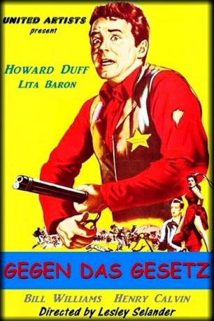
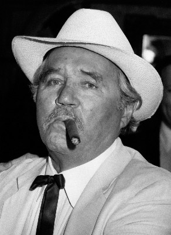
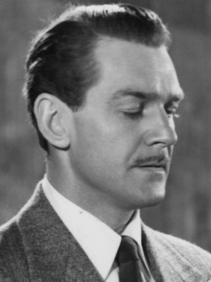
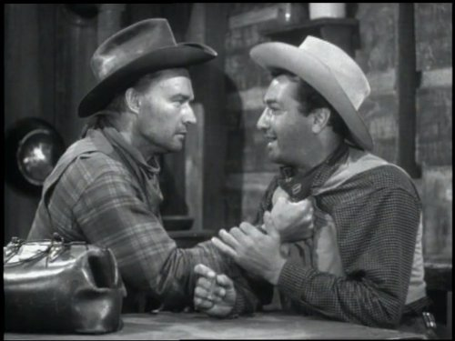
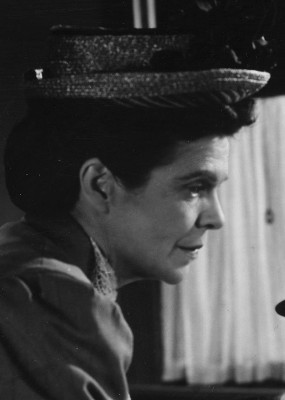
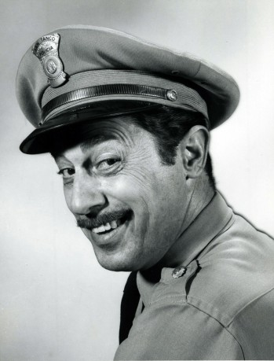
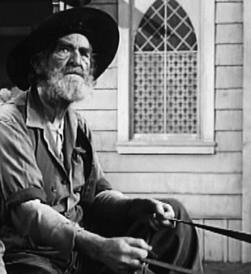

#3210 Gegen das Gesetz
Alternativ: The Broken Star
 
 IMDB-Wertung: 5.7 / 10
IMDB-Wertung: 5.7 / 10  Metascore: 0
Metascore: 0 
Bei einem Raubüberfall tötet ein habgieriger Hilfssheriff einen Banditen, der im Auftrag eines Viehbarons Schutzgelder erpresste. Auf der Suche nach seinem Geld verdächtigt der Viehbaron irrtümlich die Tochter des Ermordeten, die mit dem Freund des Hilfssheriffs verlobt ist, wodurch der Mord ans Licht kommt.
Jahr: 1956
Dauer: 78 Minuten
FSK:
Land: USA Studio: United ArtistsTonspuren: DD2.0 - ,
Untertitel:
Auflösung: 1080p (1440x764) Größe: 4055 MB
Genre: Western, Liebe
Regisseur: Lesley Selander
Drehbuch: John C. Higgins
Soundtrack: Paul Dunlap
Darsteller:
-  Howard Duff als Deputy Marshal Frank Smeed
- Bill Williams als Deputy Marshal Bill Gentry
-  Douglas Fowley als Hiram Charleton
-  John Pickard als Van Horn
-  Dorothy Adams als Mrs. Trail , uncredited
-  Vito Scotti als Pepe , uncredited
- Lita Baron als Conchita Alvarado
- Henry Calvin als Thornton Wills
 Addison Richards als Marshal Wayne Forrester
Addison Richards als Marshal Wayne Forrester- Joel Ashley als Messendyke
 William 'Bill' Phillips als Doc Mott
William 'Bill' Phillips als Doc Mott- Joe Dominguez als Nachez
- Foxy Callahan als Barfly , uncredited
- Tom Collins als Saloon Dealer , uncredited
- Cecil Combs als Barfly , uncredited
- Chick Hannan als Barfly , uncredited
- Al Haskell als Posse Member , uncredited
- Art Howard als Barfly , uncredited
-  Jack Kenny als Barfly , uncredited
- Boyd 'Red' Morgan als Hawkins , uncredited
- Tex Palmer als Barfly , uncredited
 Joe Ploski als Bartender , uncredited
Joe Ploski als Bartender , uncredited- Suzanne Ridgeway als Saloon Girl , uncredited
- Virginia Sale als Ranch Woman , uncredited
- Lloyd Shaw als Barbeque Dance Caller , uncredited
 Jack Tornek als Barfly , uncredited
Jack Tornek als Barfly , uncredited- Felipe Turich als Carlos Alvarado , uncredited
Datei: X:\HD-Western-1900-1959\Gegen das Gesetz (1956, FSK, 1440x764).mkv seit 19.02.2016
Festplatte: HD Eastern+Western
 Es gibt insgesamt 98 Filme in der Gruppe 'HD-Western-1900-1959'
Es gibt insgesamt 98 Filme in der Gruppe 'HD-Western-1900-1959'